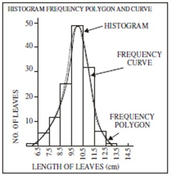
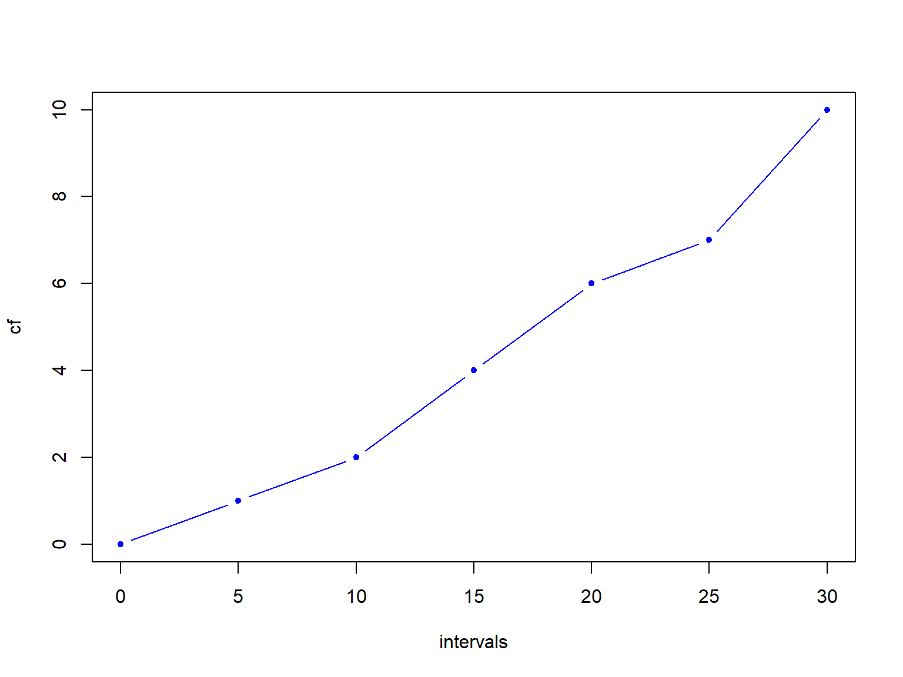
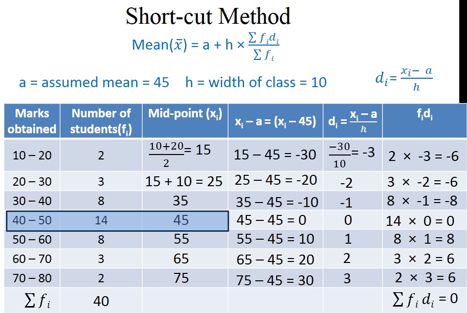

Statistics
Abdullah Al Mahmud
Concept
Statistics has three meanings:
- Data (table or a series of values)
| Expt | Run | Speed | |
|---|---|---|---|
| 001 | 1 | 1 | 850 |
| 002 | 1 | 2 | 740 |
| 003 | 1 | 3 | 900 |
| 004 | 1 | 4 | 1070 |
| 005 | 1 | 5 | 930 |
| 006 | 1 | 6 | 850 |
- Plural of statistic (formula)
- Method of analyzing and predicting data
Unorganized and Organized Data
40, 39, 31, 38, 40, 40, 34, 39, 31, 38, 37, 30, 31, 37, 35, 37, 36, 35, 39, 39
| x | Freq |
|---|---|
| 30 | 1 |
| 31 | 3 |
| 34 | 1 |
| 35 | 2 |
| 36 | 1 |
| 37 | 3 |
| 38 | 2 |
| 39 | 4 |
| 40 | 3 |
Frequency Distribution
X = 11, 15, 16, 18, 20, 22, 25
| Class | Tally | Frequency |
|---|---|---|
| 11-15 | || | 2 |
| 16-20 | ||| | 3 |
| 21-25 | || | 2 |
Construction
Range = (Highest value - Lowest value) + 1
X = 11, 15, 16, 18, 20, 22, 25
Range of X = ?
Class Interval
\((11-15) \rightarrow (15-11+1)= 5\), not 4
- \((20-24) \rightarrow ?\)
- Number of class = \(\frac{Range}{Interval}\)
- Interval = ?
Example of Frequency Distribution
X = 32, 20, 34, 17, 15, 40, 5, 18, 44, 28, 49, 27, 8, 29, 45, 39, 3, 35, 46, 37, 50, 36, 2, 4, 7, 24, 42, 31, 19, 14
Range = ?
Let, class interval = 5
Number of class = ?
- Now, construct
Interpretation
| Class (Marks out of 40) | Frequency |
|---|---|
| 11-15 | 2 |
| 16-20 | 5 |
| 21-25 | 9 |
| 26-30 | 10 |
| 31-35 | 3 |
- What have you known from this frequency distribution?
- What is the benefit of organizing?
Cumulative Frequency
| Class (Marks out of 40) | Frequency | Cumulative Frequency |
|---|---|---|
| 11-15 | 2 | 2 |
| 16-20 | 5 | 7 |
| 21-25 | 9 | 16 |
| 26-30 | 10 | 26 |
| 31-35 | 3 | 29 |
- Why Useful??
- How to interpret?
Variable
- Discrete: Any of the pre-specified number
- Continuous/Indiscrete: Any number between any two other numbers.
- Temperature
- Result of a die throw
- Mark of a subject
- GPA of a student
- Radius of screws
Diagram
Histogram
Make sure class intervals are continuous
Continuous or exclusive: (10-15); (15-20); (20-25) Discontinuous/Inclusive: (10-14); (15-19)
- If discontinuous \(\rightarrow\) convert
- Add 0.5 to upper limit and subtract 0.5 from lower limit
Conversion
| Continuous CI | Discontinuous CI |
|---|---|
| 10-14 | 9.5-14.5 |
| 15-19 | 14.5-19.5 |
| 20-24 | 19.5-24.5 |
| 25-29 | 24.5-29.5 |
Histogram Example
| Interval | Frequency |
|---|---|
| 20-30 | 5 |
| 30-40 | 12 |
| 40-50 | 30 |
| 50-60 | 40 |
| 60-70 | 20 |
| 70-80 | 13 |
| 80-90 | 3 |
| 90-100 | 2 |
 Write its interpretation in 3-5 sentences.
Write its interpretation in 3-5 sentences.
Make a Histogram
| Class Interval | Continuous CI | Frequency |
|---|---|---|
| 11-20 | 10 | |
| 21-30 | 20 | |
| 31-40 | 35 | |
| 41-50 | 20 | |
| 51-60 | 15 | |
| 61-70 | 10 | |
| 71-80 | 8 | |
| 81-90 | 5 | |
| 91-100 | 3 |
Histogram
Frequency Polygon
- Locate top midpoints of each bar of histogram
- Join the points by straight lines.
- How to draw without drawing a histogram first?
- Find midpoints of class intervals
- Join the tops of all frequencies.
Frequency Curve
Somoothed version of frequency polygon

Ogives
| intervals | CF |
|---|---|
| 0-5 | 1 |
| 5-10 | 2 |
| 10-15 | 4 |
| 15-20 | 6 |
| 20-25 | 7 |
| 25-30 | 10 |

Central Tendency
Arithmetic Mean (AM)
- From Frequency Distribution: Use mid-values and multiply with frequencies
\[AM = \frac 1 n \sum_{i=n}^n f_ix_i \]
AM in Short-cut Method
- WHY?
- Is this method really SHORT?
Shortcut Method for AM
Calculate the mean in a smart way
## [1] 1009 1037 1047 1024 1013 1043Subtract a number from all, say 1020
## [1] "The new values are"## [1] -11 17 27 4 -7 23## [1] "Mean of y is 8.83"## [1] "Mean of x is 1028.83"Shortcut Method Formula
Consider the values: 1005, 1010, 1015
If 1000 is subtracted: 5, 10, 15
If again divided by 5: 1, 2, 3
Converted Mean = 2
Original Mean = \(2 \times 5 + 1000=1010\)
x = 1005, 1010, 1015
- a = 1000
- c = 5
- y = 1, 2, 3
- \(\bar x = 2 \times 5 + 1000=1010 = a+\bar y \times c\)
- \(\bar x = a+\frac{\sum y}{n} \times c\)
Short-cut Method on Organized Data
